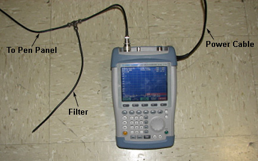
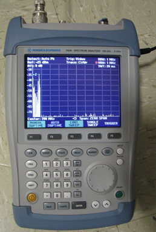

GE Exclusive Use Only
Direction 5670006, Rev# 1
Module Version 2.0, Version Date 3/23/11
GE Exclusive Use Only |
| ||||
| This procedure must only be performed by trained personnel, who have successfully completed General Electric Healthcare's training course for the Body Coil Stress Test, course number GEHC-TT-AMSYNC-MR5057. | ||||
| Condition | Reference | Effectivity |
|---|---|---|
This procedure was developed to stress the MR750 Body Coil to check for arcing. It was determined that arcing can occur if capacitors are not properly soldered onto the body coil. This procedure is only required when an MR750 Body Coil is replaced in the field, and the soldering of capacitors is necessary to tune the Body Coil. | - | - |
A Body Sphere is required for the Arc Detection test. Proceed according to the instructions that follow.
Place the Body Sphere on the cradle, landmark the phantom near or in middle of cradle to minimize any potential coupling of Body RF energy into A, P1 and P2 receive lines, and [Advance to Scan].
Remove the Spectrum Analyzer from the Arc Detection Kit, and position it near the Operator Console if possible.
Plug the power adaptor into the proper outlet and into the right side of the Spectrum Analyzer.
Turn the power on by pressing the yellow button on the lower left side of the Analyzer.
Press the [Preset] button on the Analyzer to download the default settings, then press the [SWEEP] button.
To set the Trigger: Press [SWEEP], [F5], press either the up [^] or down [v] button to select Video, type 8 and 0, and press [ENTER].
Continue with the Spectrum Analyzer setup as follows:
Set the frequency to 200 Mhz: Press [FREQ], type 200 using the keypad, press [MHz dBm] and [ENTER].
Set the frequency span: Press [SPAN], type 0, and press [ENTER].
Set the Range: Press [AMPT], [F2], either the up [^] or down [v] button to obtain 5 dB/DIV, and press [ENTER].
Set the Ref Level: Press [AMPT], [F1], [-] (minus), type 2 and 5 and press [ENTER].
Set the Resolution: Press [BW], [F1], type 1, press [MHz] and [ENTER].
Set the Video: Press [BW], [F3], type 1, press [MHz] and [ENTER].
Set the Sweeptime: Press [SWEEP], type 2 and 0, press [ENTER].
Set the Detector: Press [TRACE], [DETECTOR], press either the up [^] or down [v] button for Auto Peak, and press [ENTER].
Set the Trigger: Press [SWEEP], [F5], press either the up [^] or down [v] button to select Video, type 8 and 0, and press [ENTER].
Make the following connections for the Spectrum Analyzer:
Illustration 3: Connections to Spectrum Analyzer

Connect the port labeled RF Input to a short one-foot (0.3 meter) cable.
Connect the other end of the short cable to the BNC-T Connector that is part of the 127.72 mHz BNC Stub Filter or short filter.
Connect one of the 50 ft. coaxial cables to the other side of the BNC-T Connector on the stub filter.
Attach the other end of the 50 ft. BNC Cable to an open BNC Connector (Service J112 or other) on the PEN Panel.
Adjust the two individual dipoles of the antenna out to approximately 13-5/8 in. (34.6 cm) in length. There are fixed holes for the two dipoles. Re-insert the screws and wing nuts.
Temporarily place the antenna in the Operator Room so it is outside of the Magnet Room.
Connect the BNC Cable between the antenna and the BNC port on the PEN Panel, which is connected to the Spectrum Analyzer.
| ||||
| Possible Personal Injury or Equipment Damage! | ||||
| The Piezo Gun is ferrous and will be pulled toward the magnet. | ||||
| Avoid positioning the gun near the bore of the magnet. |
Make sure the antenna is outside of the Magnet Room, away from the magnet.
Hold the Pizeo Gun against the antenna, and press the black button on the gun. (A spark should be visible at the tip of the gun.) Press the black button on the gun several times.
Observe the Spectrum Analyzer. Spikes should display as shown.
Illustration 7: Spectrum Analyzer Review

Reset the Spectrum Analyzer by pressing the [F5]or[Trigger] button, [Free Run], and [ENTER].
Next, press [F5]or[Trigger], [Video], and press [ENTER] twice. This will clear the Spectrum Analyzer in preparation for the arc detection scan.
Proceed according to the instructions that follow for the arc detection scan.
Place the antenna on the table as shown. (The antenna should be placed just behind the IV pole inserts.)
Set up a scan:
Select New Patient and type: geservice for the Patient ID.
Type 300 for the Weight (Lb), and press [Enter].
Select Show All Protocols... and Service. Next, select APBCAL, the center arrow, and click [Accept].
Select [Start Scan].
Select Research Options from the drop-down menu next to the Scan button, and change the following:
From the pull-down Research menu, select Download.
On the Scan drop-down list, select Manual Prescan, then Scan TR.
Increase TG to 200.
Allow Manual Prescan to run for 15 minutes. At the end of the 15-minute prescan at TG of 200, check the spectrum analyzer for any spike events.
Press [Done] to exit the Manual Prescan upon completion.
Move the antenna out of the Scan Room.
Repeat Verification Using Pizeo Gun. This will verify that the Arc Detection tool is properly working.
The Universal Power Monitor (UPM) may require emulation before performing this troubleshooting procedure. To emulate the UPM, select Software > Software Utilities > Stage and Custom Configuration on the MR750 DVD, Direction 5500113.
| ||||
| Follow LOTO for RF Amplifier and PEN Cabinet (Magnet Room Electronics) for the RF Amplifier. | ||||
Starting with normal configuration, remove the “I” RF drive cable (Q remains connected) between the hybrid and RF Body Coil. Run scan at TG = 170.
Remove “Q” RF drive cable that runs from the hybrid to the RF Body Coil and replace it with the “I” RF drive cable. Run scan at TG = 170.
Remove remaining RF drive cable from the hybrid and RF Body Coil so that neither “I” nor “Q” RF drive cable is connected at either end. Run scan at TG = 140.